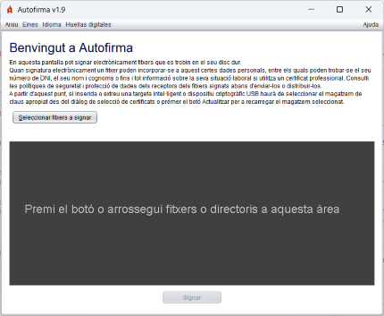
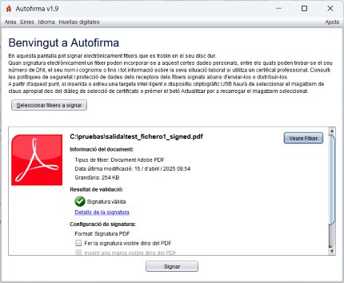
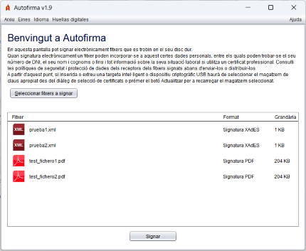
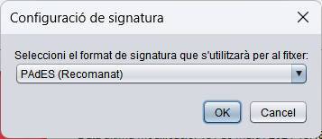

Des d'aquesta pantalla pot selecionar els documents o directoris que desitja signar.

Pot seleccionar un o diversos documents prement el botó "Seleccionar fitxers a signar" o arrástrando els documents i/o directoris a l'àrea indicada (el requadre de color gris fosc).
En carregar els documents a signar, se li mostraran certs detalls sobre aquests, que variaran segons se seleccioni un únic fitxer o varis:
 
En el requadre habilitat per a arrossegar els documents que desitjaven signar li haurà aparegut la informació del fitxer o fitxers que hagi seleccionat.
Si només va seleccionar un fitxer i disposa d'una aplicació predeterminada per a aquest tipus de documents, li apareixerà el botó "Veure fitxer" amb el qual podrà obrir-lo. A més, li apareixerà la informació relativa al fitxer i a la signatura que es generarà (format, atributs de signatura i opcions de signatura). En el cas d'haver configurat dades per al format de signatura seleccionat que es vagi a incloure en la pròpia signatura, com la política de signatura, es mostrarà un enllaç "Veure tots..." des de la qual es podran visualitzar tots els atributs de signatura definits.
Si es van seleccionar diversos fitxers o directoris, pot fer doble clic sobre ells per a obrir-los o prémer amb el botó secundari del ratolí per a veure les opcions de "Veure fitxer" i "Veure els atributs de signatura".
El botó "Signar" situat en el costat inferior de la pantalla li permetrà signar el document. Si el magatzem de certificats del seu sistema operatiu encara no hagués acabat de carregar-se, el botó apareixerà deshabilitat i amb una imatge animada d'espera. En aquest cas, si us plau, esperi que aquesta desaparegui i s'habiliti el botó.
Una vegada premut el botó, el programa generarà una signatura per a cada document seleccionat. Per a cada tipus de document es generarà la signatura amb el format establert a des del panell de preferències.
En cas que es desitgi signar en un altre format diferent el fitxer ja seleccionat, es permetrà modificar seleccionant l'enllaç "(Canviar)" que es troba al costat de la informació sobre el format. En seleccionar-ho, s'obrirà la següent finestra on es permet triar el format desitjat:

Els tipus de document que es distingeixen i els formats de signatura que admeten es mostren en la següent taula:
| Tipus de document | Icona | Formats de signatura (ressaltat el per defecte) |
|---|---|---|
| PAdES, CAdES i XAdES. | ||
| XML | XAdES i CAdES. | |
| Factura electrònica | FacturaE, CAdES i XAdES. | |
| OOXML | CAdES, XAdES i OOXML (Office Open XML). | |
| ODF | CAdES, XAdES i ODF (Open Document Format). | |
| Resta de documents | CAdES i XAdES. | |
| Signatura electrònica | El mateix de la signatura original. |
Com a excepció a aquest últim cas, no es pot tornar a signar una factura electrònica ja signada en format Factura-e.
En signar fitxers, es mostrarà una finestra per al guardat de la signatura generada si només es va seleccionar un document o un diàleg per a seleccionar el directori de sortida si es van seleccionar varis. Després de guardar les signatures, es mostrarà la pantalla de detall de signatura.
El procés de signatura pot veure's alterat pels plugins instal·lats en Autofirma. Consulti l'apartat de gestió de plugins per a saber més sobre ells.
De manera complementària als botons i elements gràfics, pot usar també la barra de menú o els següents acceleradors de teclat:
Control (⌘ en macOS) + S : Seleccionar fitxer.Control (⌘ en macOS) + F : Signar el fitxer seleccionat.Pot configurar el format de signatura a utilitzar per cada tipus de fitxer i les particularitats d'aquests formats, així com el comportament general de l'aplicació, a partir del panell de preferències disponible a través del menú Opcions.
Alguns formats o opcions de signatura poden fer aparèixer opcions de configuració addicionals en la pròpia finestra de signatura:
La signatura PDF d'un únic document permet configurar el que la signatura es mostri en el document. Per a això serà necessari marcar la casella "Fer la signatura visible dins del PDF".
També és possible inserir una marca visible en el PDF al temps de realitzar la signatura. Aquesta opció modificarà el PDF agregant-li la imatge seleccionada i, seguidament, el signarà. Per a usar aquesta funció serà necessari marcar la casella "Inserir marca visible en el PDF". Aquesta casella estarà deshabilitada si el document PDF ja està signat, ja que la inserció d'una marca invalidaria les signatures anteriors.
Una altra opció disponible seria la de generar un PDF certificat, serà possible si la signatura a realitzar és format PAdES i el document no està prèviament signat. Es realitza en marcar la casella "Generar PDF certificat", i s'aplica al document el nivell de certificació seleccionat en la llista d'opcions sota aquesta casella. El llistat d'opcions estarà deshabilitat si la casella "Generar PDF certificat" no està habilitada.
Aquestes opciónes apareixeran marcades o no per defecte segons s'hagi establert en el panell de preferències. En seleccionar qualsevol d'aquestes caselles, se'ns mostrarà el panell de Propietats d'elements visibles en PDF.
En agregar una nova signatura binària o XML a un document de signatura, es permet configurar si la nova signatura es realitzarà sobre el propi document (cosignatura) o sobre les signatures ja introduïdes (contrasigna). Aquesta opció pot configurar-se des del panell de preferències dels formats CAdES i XAdES. Quan aplicació, Autofirma mostrarà a l'usuari un botó "Opcions Avançades" des del qual poder accedir directament a aquestes opcions de configuració.
En els processos de signatura de múltiples documents s'omet qualsevol configuració que obligui a detenir el procés de signatura. Així, per exemple, s'ometrà la sol·licitud de contrasenya dels PDF i la configuració de signatura visible i marca visible es demanarà una única vegada i s'aplicarà a tots els documents amb la mateixa configuració.